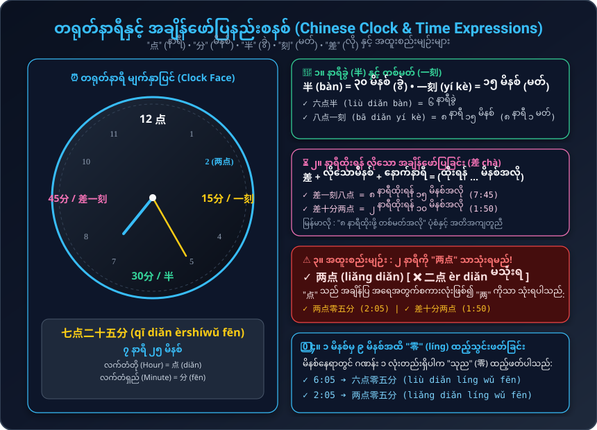
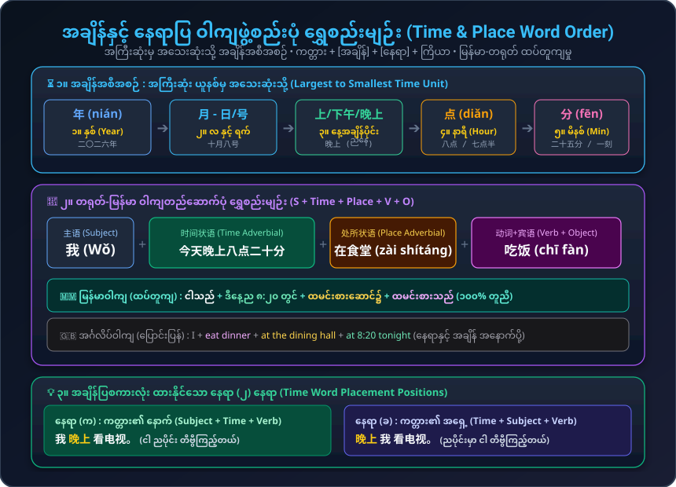

နာရီနှင့် မိနစ် ဖတ်ရှုနည်း (点, 分, 半, 刻, 差)၊ ၂ နာရီကို "两点" ခေါ်ဆိုခြင်း၊ အချိန်နှင့် နေရာပြ ဝါကျဖွဲ့စည်းပုံ (S + Time + Place + V + O) နှင့် "吧" အကြံပြုချက်
အချိန်မေးမြန်းခြင်း၊ နာရီနှင့် မိနစ် ပြောဆိုခြင်း၊ နေ့စဉ် အချိန်ဇယားနှင့် အကြံပြုချက် ဝါကျများ
စာသင်ချိန်နှင့် စာသင်ခန်းသွားချိန် မေးမြန်းခြင်း၊ မဟာတံတိုင်းကြီးဆီ သွားရန် စီစဉ်ခြင်း
နာရီမျက်နှာပြင် အချိန်ဖတ်နည်းစနစ်နှင့် အချိန်-နေရာပြ ဝါကျဖွဲ့စည်းပုံ ပိရမစ်

💡 ၂ နာရီကို အမြဲ "两点" (liǎng diǎn) ဟုခေါ်ဆိုပြီး "二点" မသုံးရပါ။ ၃၀ မိနစ်ကို "半" (bàn)၊ ၁၅ မိနစ်ကို "一刻" (yí kè)၊ ထိုးရန်လိုသောအချိန်ကို "差" (chà) သုံးသည်။

💡 တရုတ်နှင့် မြန်မာသည် ဝါကျဖွဲ့စည်းပုံ အတိအကျတူညီပါသည်: [ကတ္တား + အချိန် + နေရာ + ကြိယာ]။ အချိန်ကို အကြီးဆုံးမှ အသေးဆုံးသို့ စီစဉ်ရသည်။
ကတ်များကို နှိပ်၍ အရေးကြီးသော အချိန်ဖော်ပြချက်များ၏ အသံထွက်ကို လေ့ကျင့်ပါ
စကားလုံးတိုင်းအတွက် Pinyin၊ မြန်မာအသံထွက်၊ အဓိပ္ပာယ်နှင့် စတူဒီယို အသံဖိုင်များ
တရုတ်နာရီဖတ်ပုံစနစ်၊ အချိန်ပြစကားလုံးနေရာထားပုံနှင့် "吧" သုံးစွဲပုံ
တရုတ်ဘာသာတွင် အချိန်နှင့် နေရာစကားစုများသည် ကြိယာ၏ အရှေ့တွင် ရှိရပါသည်။ ဤဝါကျတည်ဆောက်ပုံသည် မြန်မာဘာသာစကားနှင့် ၁၀၀% ထပ်တူကျ ပါသည်:
| ကတ္တား (S) | အချိန် (Time) | နေရာ (Place) | ကြိယာ (V + O) | အသံဖိုင် |
|---|---|---|---|---|
| 我 (Wǒ) | 今天晚上八点二十分 | 在食堂 | 看电影 | |
| ငါသည် | ဒီနေ့ည ၈ နာရီ ၂၀ တွင် | ထမင်းစားဆောင်၌ | ရုပ်ရှင်ကြည့်သည် | ✓ ထပ်တူကျ |
ဝါကျအဆုံးတွင် "吧" ထည့်ဆိုခြင်းဖြင့် တဖက်သားအား အကြံပြုခြင်း၊ ဆွေးနွေးညှိနှိုင်းခြင်း (suggestion / recommendation) ကို ဖော်ပြသည်:
၁ သံ + သံပေါ့ (Neutral tone) စကားလုံးများနှင့် စနေနေ့ ရုပ်ရှင်သွားကြည့်ခြင်း ပုံပြင်
ရှေ့စာလုံးကို မြင့်မြင့်ဆွဲဆိုပြီး နောက်စာလုံးကို ခပ်ဖွဖွ ပေါ့ပေါ့ရွတ်ပါ:
သင်ခန်းစာ (၈) မှ နာရီဖတ်ပုံနှင့် ဝါကျဖွဲ့စည်းပုံများကို စမ်းသပ်ဖြေဆိုကြည့်ပါ